publications/
Publications_
Journal articles, conference proceedings, books, and reports on science learning, AI, and science communication. For citation counts, see Google Scholar.
34 works2015–2026
2026
2026
2026
2026
2026
2026
2026
2026
2026
2025
2025
.png) 2025
2024
2025
2024
 2023
2023
.jpg) 2023
2022
2022
2022
2023
2022
2022
2022
 2022
2022
2021
2021
2021
2021
2022
2022
2021
2021
2021
2021
 2020
2020
2019
2015
2020
2020
2019
2015

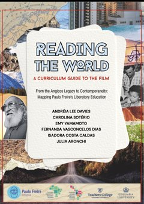
Reading the World: A Curriculum Guide to the Film
guidebookPaulo Freire Initiative at Columbia University, Academic Commons
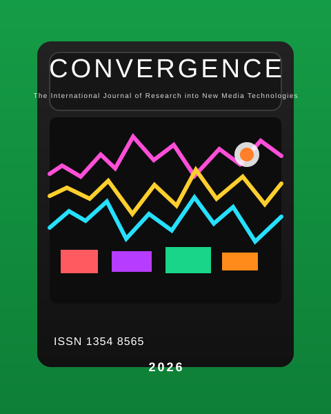
Digital Ecologies of Hope: A Natural History of Emerging Media Futures
journalConvergence: The International Journal of Research into New Media Technologies
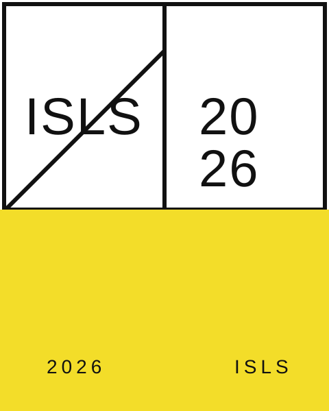
Students' journeys with boundary tools: Comparing home and classroom encounters with a lab experiment
conferenceProceedings of the International Society of the Learning Sciences (ISLS) 2026
Students' mental models of AI chatbots in inquiry learning: A friend, an instructor, a browser, and a partner
conferenceProceedings of the International Society of the Learning Sciences (ISLS) 2026
Can Critical Pedagogy Survive Algorithmic Constraints?
conferenceProceedings of the International Society of the Learning Sciences (ISLS) 2026
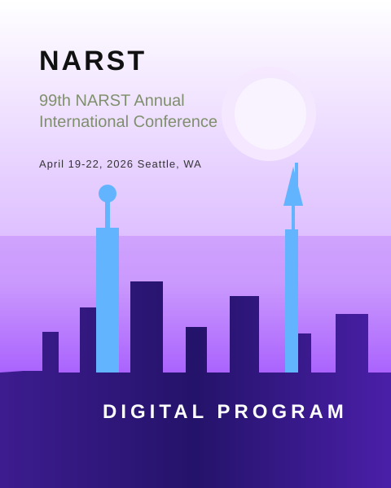
A Friend, Instructor, Browser, Partner, or Something Else? Interaction Modes in Student-AI Science Learning Conversation
conferenceProceedings of the National Association for Research in Science Teaching (NARST) 2026
Complex science, simple tools: A pocketable, low-cost lab for sophisticated experiments in middle-school science
conferenceProceedings of the International Society of the Learning Sciences (ISLS) 2026Outstanding Student Poster Award
Do Anti-democratic Bots Dream of Digital Riots? Modeling Anti-democratic Decision-making and Collective Knowledge Construction Using Natural Language Processing
conferenceProceedings of the International Society of the Learning Sciences (ISLS) 2026
Learning Sciences in the Global South: Dialogue for multiple ways of knowing and doing
conferenceProceedings of the International Society of the Learning Sciences (ISLS) 2026
2026
2026
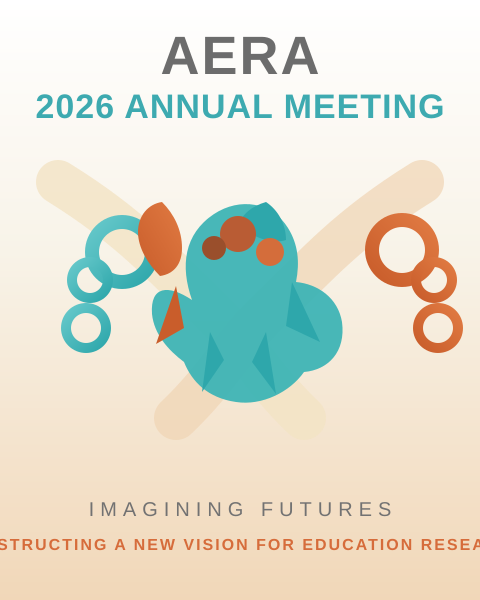
The Laboratory of Hope: Digital Habitats of Persistence and Problem-Solving
conferenceProceedings of the AERA 2026
Can paper be a science lab? Designing with 'low-tech' learning tools in high-tech times
conferenceProceedings of the International Society of the Learning Sciences (ISLS) 2026
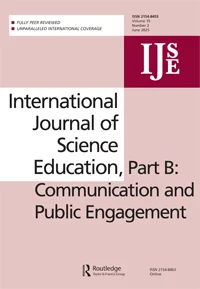
What do they want to learn? Student-centered insights on science communication training
journalInternational Journal of Science Education, Part B: Communication and Public Engagement
Lab-on-a-Book: A paper-based chemistry kit for hands-on science learning in under-resourced schools
conferenceProceedings of Constructionism 2025
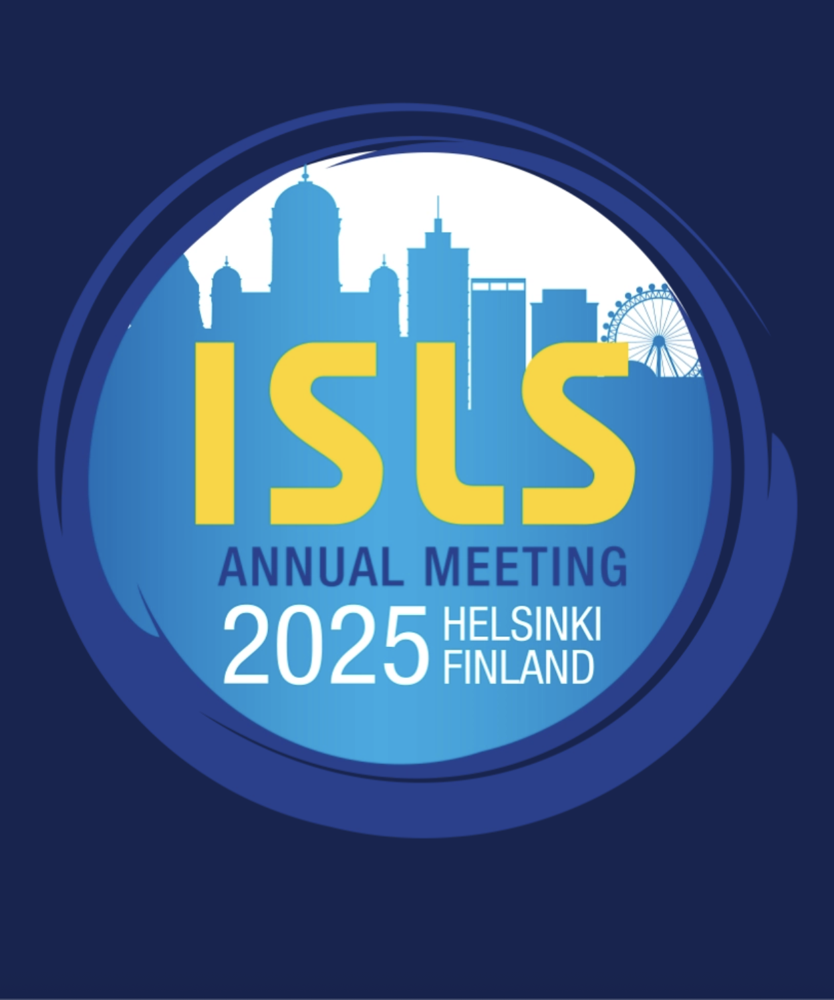
Co-constructing (twisted) knowledge: Argumentation in far-right YouTube comments on Brazil's war with X's Elon Musk
conferenceProceedings of ISLS 2025
What do students want to learn? Participatory elaboration of a guidebook on science communication for chemistry undergraduates
dissertationDoctoral Dissertation, Universidade de São Paulo
2024

2023
How can we communicate science? Chemistry students guide
guidebookInternal Publication
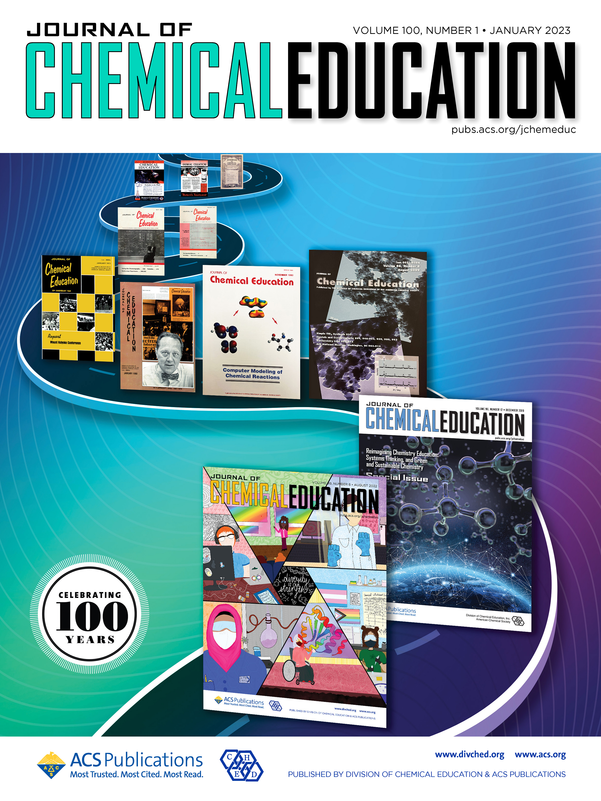
Chemistry students as science journalists: Creating a virtual magazine on COVID-19
journalJournal of Chemical Education, 100(1)
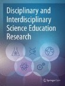
Teaching controversial socio-scientific issues in online exhibits of science museums: COVID-19 on the scene
journalDisciplinary and Interdisciplinary Science Education Research (SpringerOpen), 5(1)
2023
2023
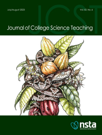
Improving writing skills through scripting a science podcast for non-expert audiences
journalJournal of College Science Teaching, 52(6)
The biochemistry behind COVID-19: Webquest development and application for emergency remote teaching
journalQuímica Nova, 46(8)
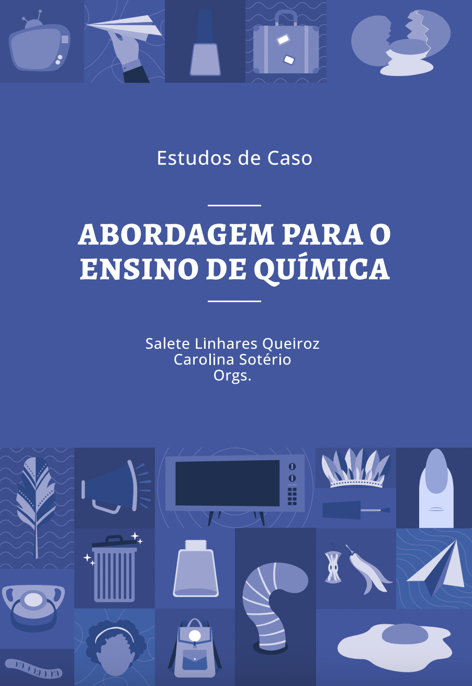
Case Studies: Approach to Chemistry Education
bookSão Carlos: Diagrama Editorial
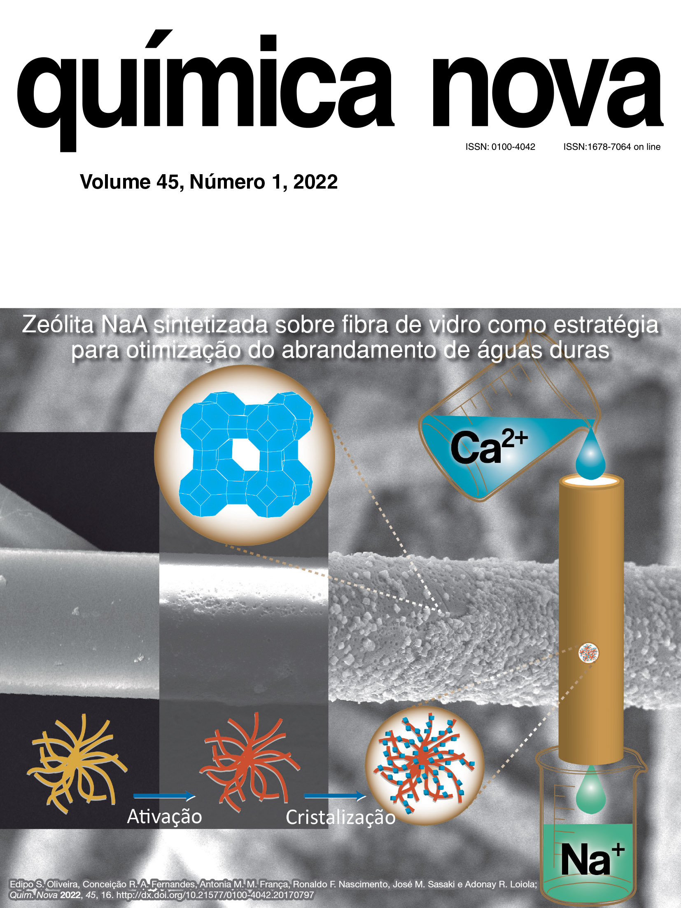
Cooperative and collaborative learning to teach chemical equilibrium to freshman students
journalQuímica Nova, 45(1)
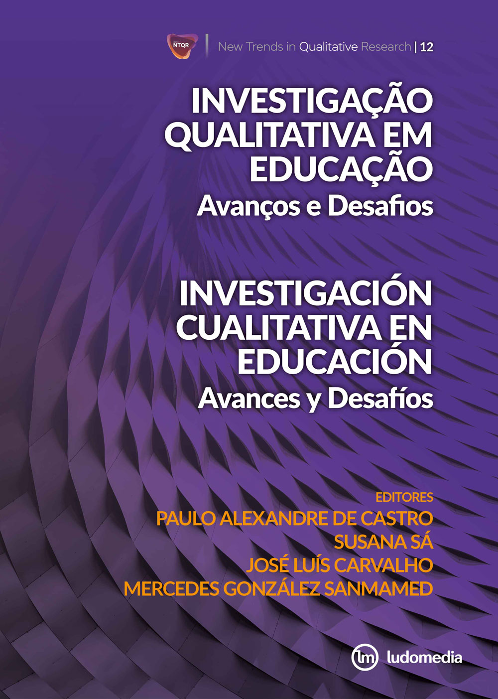
Elaboration of popular science texts on COVID-19 in higher education chemistry: Content analysis in focus
chapterNew Trends in Qualitative Research, Vol. 12
Writing Popular Science Texts on Treatments to Fight Covid-19
conferenceHands-on Science Conference, University of Burgos, Spain, 2022
Creating Blogs about Chemistry and Covid-19
conferenceHands-on Science Conference, University of Burgos, Spain, 2022
Analyzing Visual Representation in Brazilian Chemistry Textbooks
conferenceHands-on Science Conference, University of Burgos, Spain, 2022
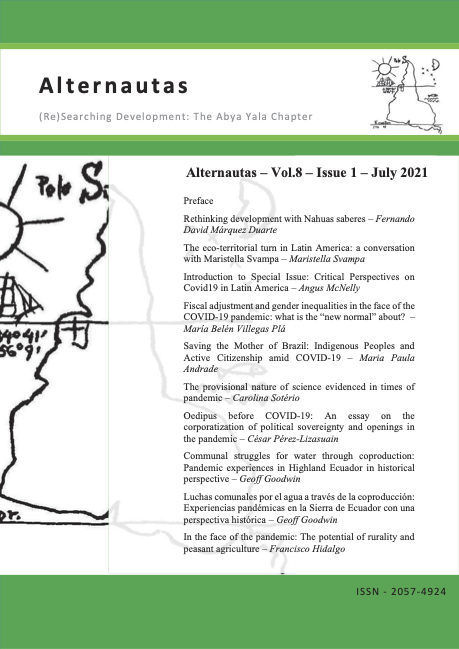
The provisional nature of science evidenced in times of pandemic
journalAlternautas, 8(1)
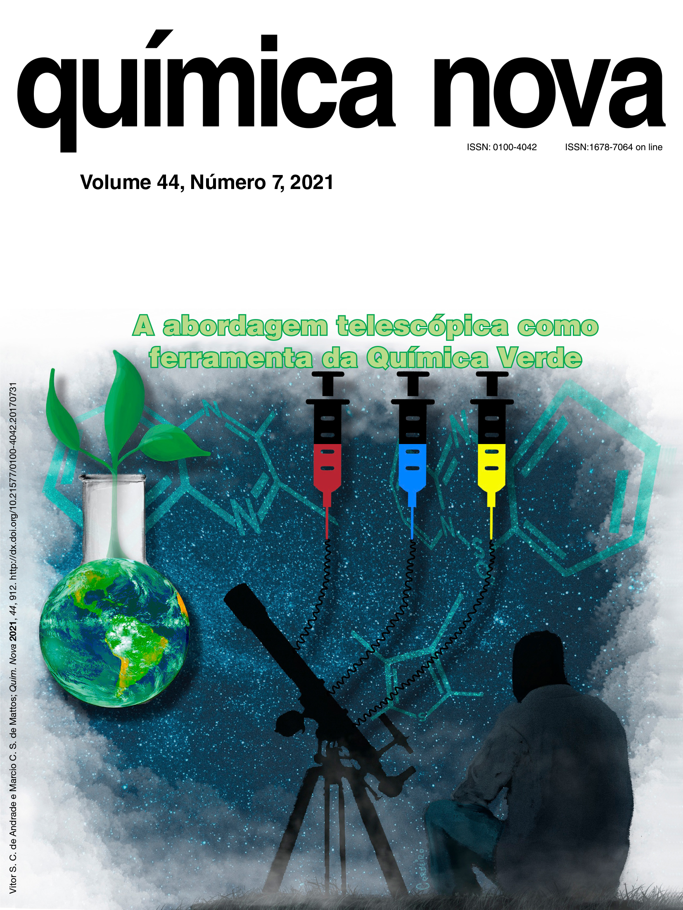
The application of a comic strip, Trinity, in chemistry education
journalQuímica Nova, 44(8)
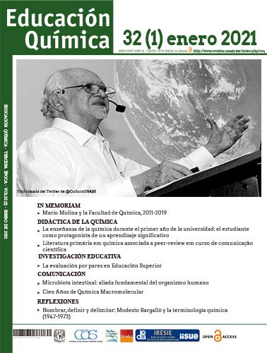
Combining primary chemistry literature and peer-review into a science communication course
journalEducación Química, 32(1)
Hands-on an Everyday Chemistry Podcast: The Case of Minuto da Química
conferenceHands-on Science Conference, Virtual, 2021
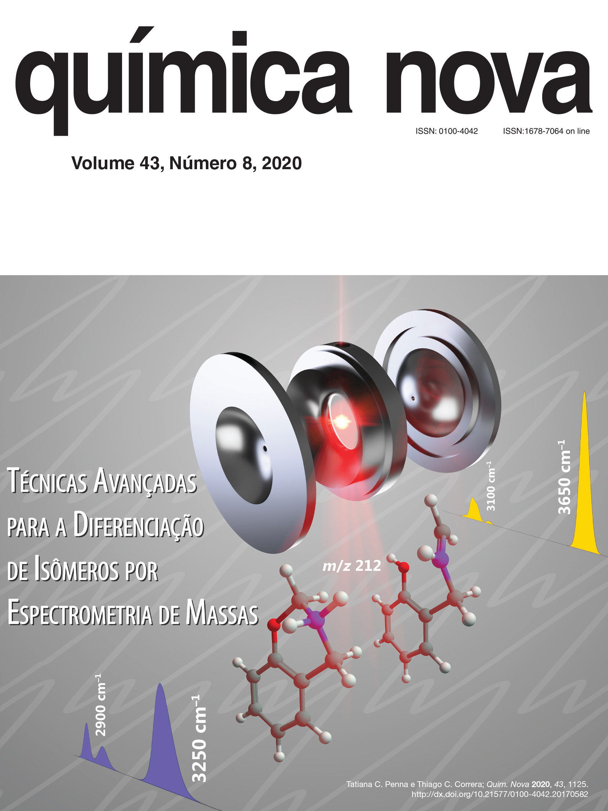
Writing strategies for incorporating public communication of science into chemistry education
journalQuímica Nova, 43(8)
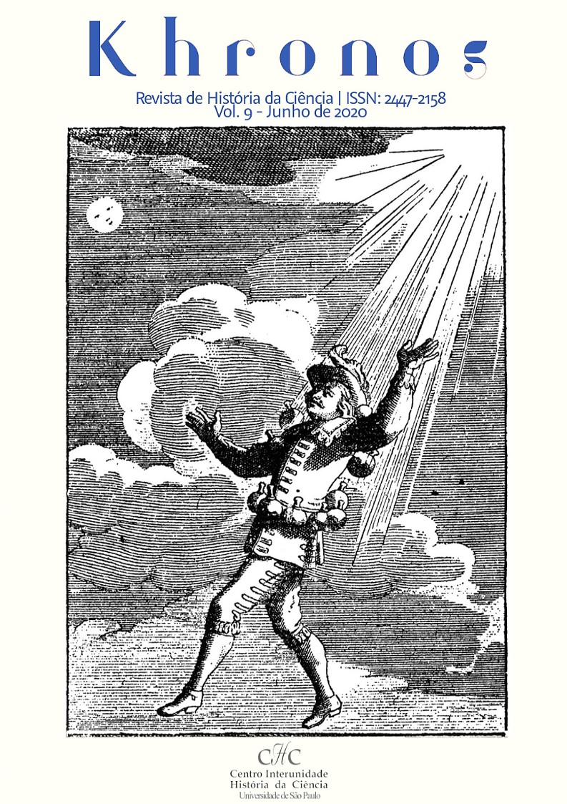
Shortening distances in science communication: From the Republic of Letters to The Martian
journalKhronos, (9)
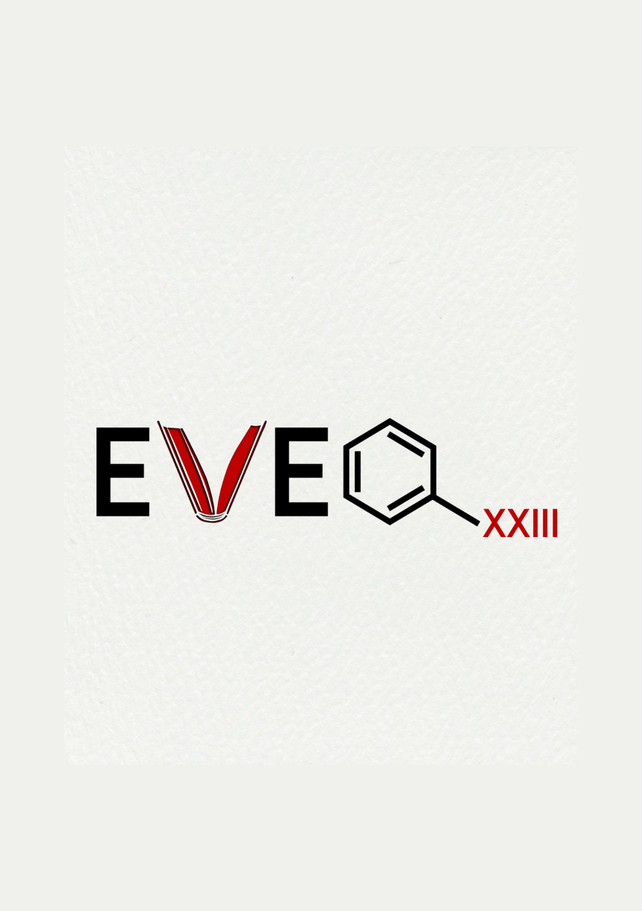
Science communication in higher education: Strategies in natural sciences
conferenceXVII EVEQ — Encontro de Educação em Química
Application of chimarrão yerba mate residue as a catalyst in organic reactions
paperConselho Regional de Química — IV Região